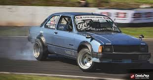

Drift ou Drifting, é uma técnica de direção utilizada em carros, consiste em
deslizar nas curvas escapando a traseira, girar o volante para que as rodas dianteiras
estejam sempre em uma direção oposta a curva, controlando o nível de derrapagem, fazendo
o carro literalmente andar de lado.

Teste se vocẽ é bom no drift.
Regras do Drift
1. O piloto líder não deve estar fora da pista ou completamente fora do traçado;
2. O piloto perseguidor só pode ultrapassar em um local de Clip-Point interno;
3. O piloto perseguidor só pode ultrapassar o piloto líder pelo lado de dentro da curva;